C1 دفء جريء · C2 ثقة جريئة · C3 وحدات متحركة — نفس المحتوى والأرقام والبنية، واختلاف بصري فقط. تقييم بمصفوفة موزونة، وترشيح خبير بانتظار موافقة المالك واختبار المستخدمين الحقيقي.
لمس فوري ← حالة «جارٍ التسجيل» تمنع التكرار ← تأكيد بالمبلغ والوجهة ← عودة للسياق ← إبراز القيمة المتأثرة (161.00) مرة واحدة — وكلها تتعطل مع تفضيل تقليل الحركة.
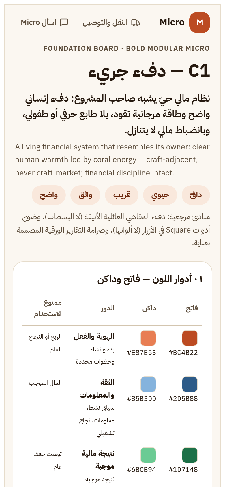
لوحة الأساس — الأدوار والتباين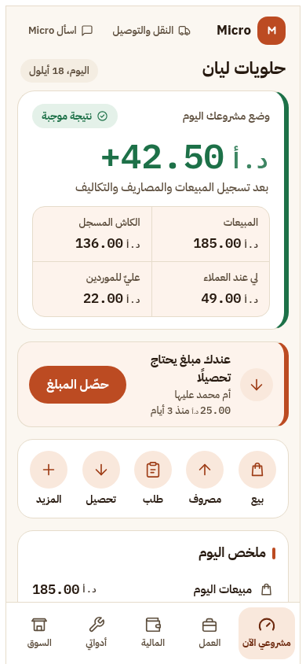
نتيجة موجبة +42.50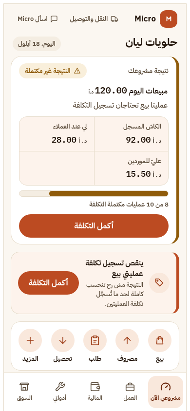
غير مكتملة — 8 من 10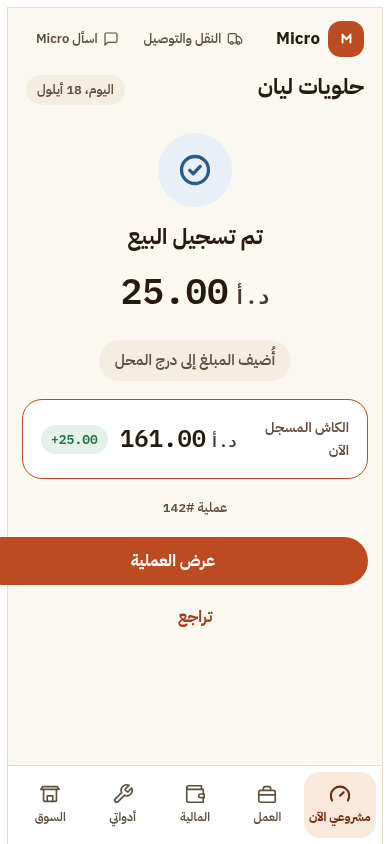
نجاح البيع — الكاش 161.00الصفات: دافئ · حيوي · قريب · واثق · واضح — الحافة الطينية تحمل الحالة والفعل، والأسطح البيضاء المستديرة تحمل القراءة. المخاطرة الأساسية: الاقتراب من جمالية أسواق الحرف.
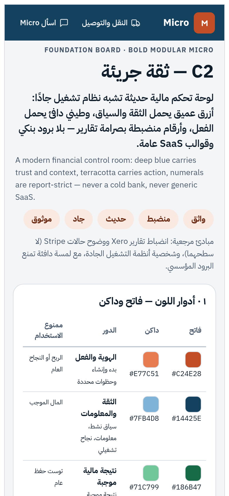
لوحة الأساس — الأدوار والتباين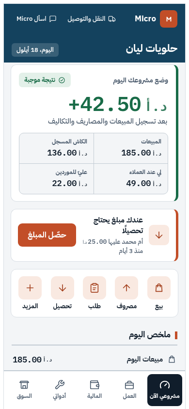
نتيجة موجبة +42.50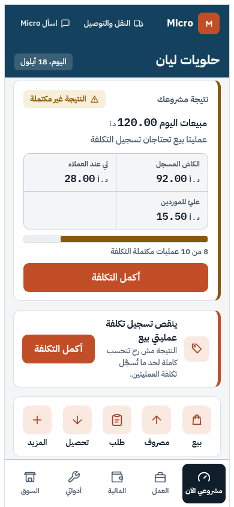
غير مكتملة — 8 من 10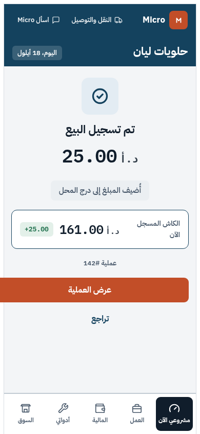
نجاح البيع — الكاش 161.00الصفات: واثق · منضبط · حديث · جاد · موثوق — الأزرق العميق يحمل الثقة والسياق، والطيني يحمل الفعل. المخاطرة الأساسية: التحول لواجهة بنكية عامة إن ذاب الطيني.
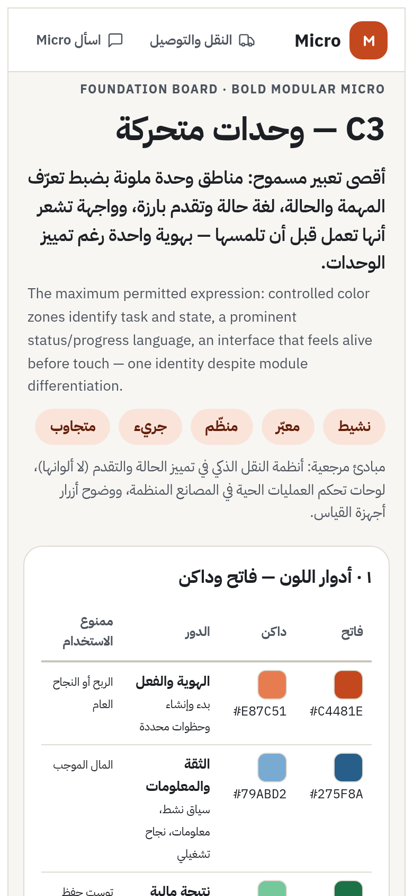
لوحة الأساس — الأدوار والتباين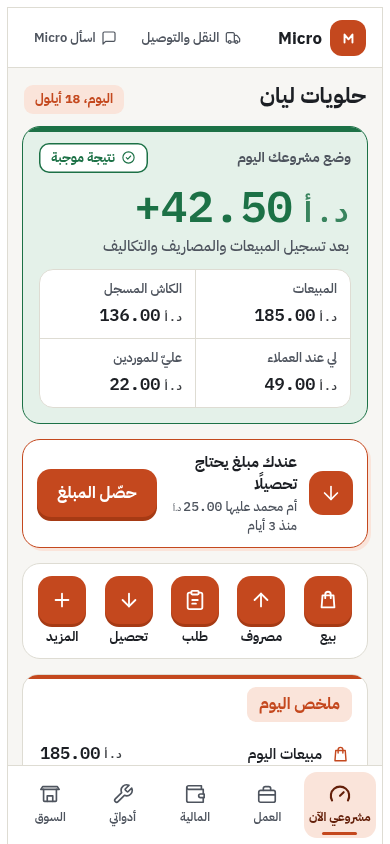
نتيجة موجبة +42.50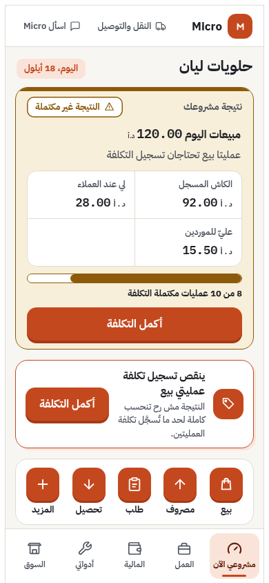
غير مكتملة — 8 من 10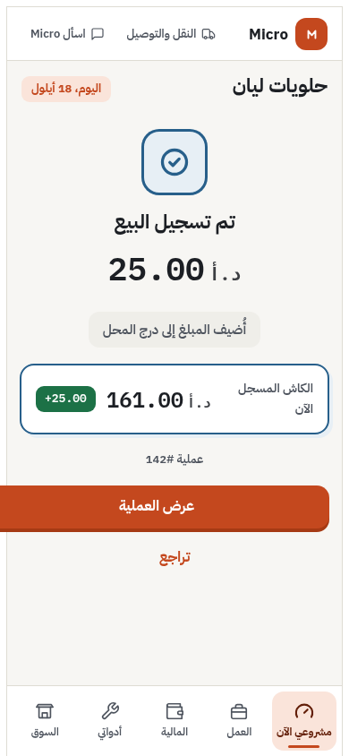
نجاح البيع — الكاش 161.00الصفات: نشيط · معبّر · منظّم · جريء · متجاوب — حقل الحالة الملوّن الكامل في البطل، ولهجات سياقية على الرؤوس فقط. المخاطرة الأساسية: التفتت والحمل المعرفي على المستخدم المحدود الخبرة.
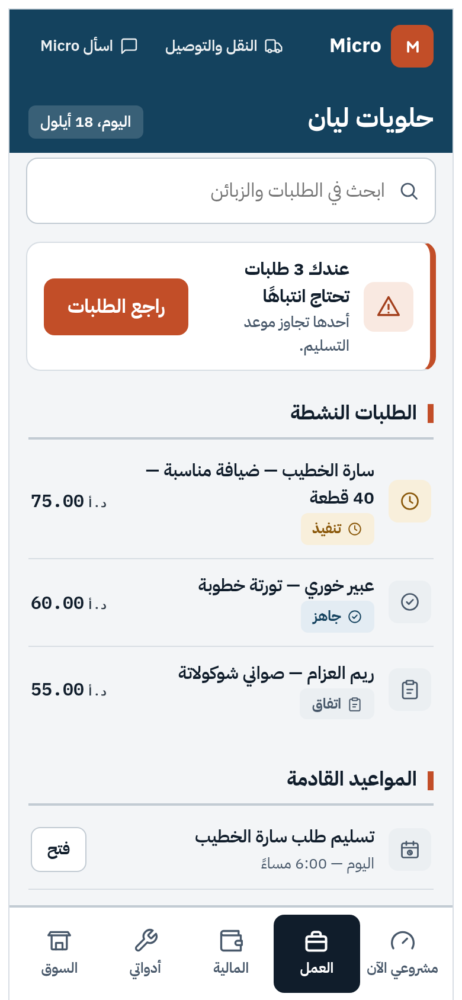
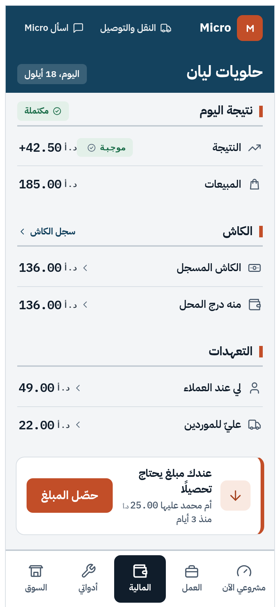
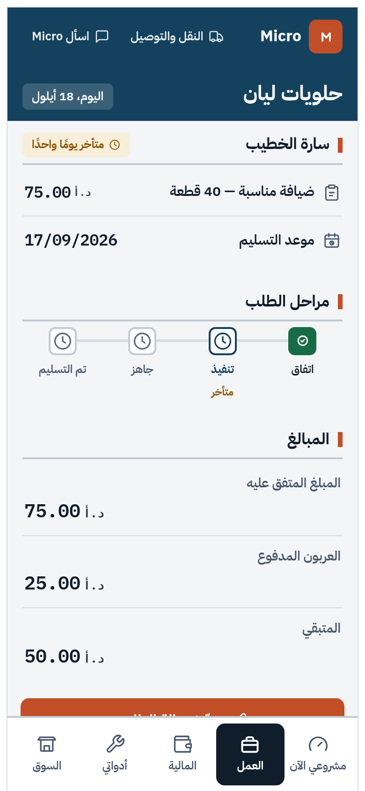
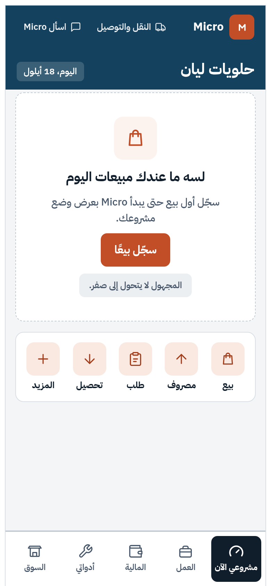
نموذج طلب متأخر بسكة مراحل (اتفاق ← تنفيذ ← جاهز ← تم التسليم + متأخر)، والمالية أهدأ من الرئيسية بصفوف جدولية.
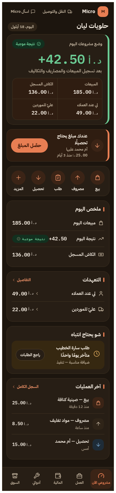
C1 داكن — أرضية دافئة معاد ضبطها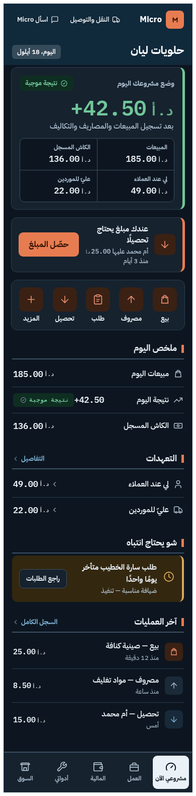
C2 داكن — الشريط يصبح كحليًا عميقًا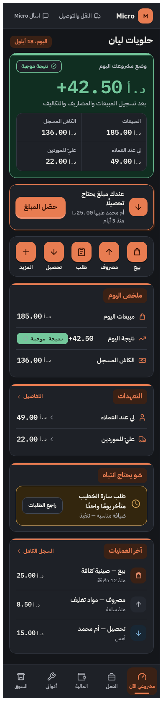
C3 داكن — ألوان فُتحت للوهج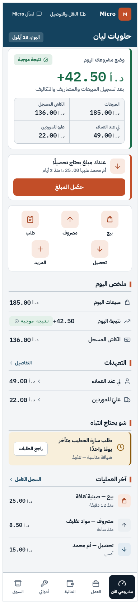
نص 200% — بلا تمرير أفقيبراهين إضافية في exports/: عروض 320/390/430، تقليل الحركة، إبراز تركيز لوحة المفاتيح، وفحص تدرج رمادي يثبت أن الحالات لا تعتمد على اللون وحده.
| الزوج | الاستخدام | النسبة | النتيجة |
|---|---|---|---|
| #101D2B / #F3F5F7 | نص أساسي / أرضية | 14.6:1 | PASS |
| #4A5B6C / #FFFFFF | ثانوي / سطح | 7.4:1 | PASS |
| #FFFFFF / #C24E28 | نص الزر الطيني | 4.9:1 | PASS |
| #186B47 / #E3F0E9 | حالة موجبة على حشوة | 5.4:1 | PASS |
| #8A580A / #F8EFDB | انتباه على حشوة | 5.1:1 | PASS |
| المعيار | الوزن | C1 | C2 | C3 |
|---|---|---|---|---|
| فهم مالي خلال 5 ثوانٍ | 18% | 4 | 5 | 5 |
| اكتشاف الإجراء وسرعته | 14% | 4 | 4 | 5 |
| الإحساس بالسيطرة | 12% | 4 | 5 | 4 |
| الثقة بالأرقام | 12% | 4 | 5 | 4 |
| الحيوية البصرية | 10% | 4 | 4 | 5 |
| راحة الاستخدام المطوّل | 8% | 5 | 4 | 4 |
| قابلية الاستخدام لمحدودي الخبرة | 8% | 5 | 4 | 3 |
| هوية Micro المميزة | 7% | 4 | 4 | 5 |
| جودة RTL العربية | 4% | 5 | 5 | 5 |
| الوصول | 4% | 5 | 5 | 5 |
| قابلية التوسع المستقبلي | 3% | 4 | 4 | 5 |
| المجموع الموزون | 100% | 4.24 | 4.50 | 4.52 |
فارق 0.02 بين C3 وC2 داخل هامش التقدير الخبير — تعادل إحصائي. القرار حُسم بترتيب أولويات المالك المعلن (فهم المال، السيطرة، الثقة أولًا): تتقدم C2 على أعلى أربعة معايير موزونة (3.10 مقابل 2.56).
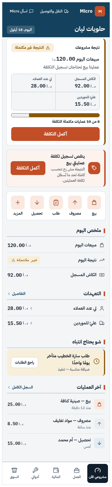
غير مكتملة — شريط إنجاز أبرز (من C3)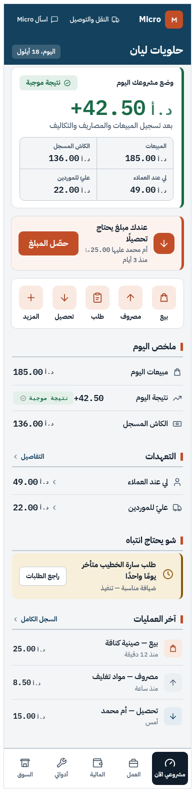
موجبة — إشارة دافئة (من C1)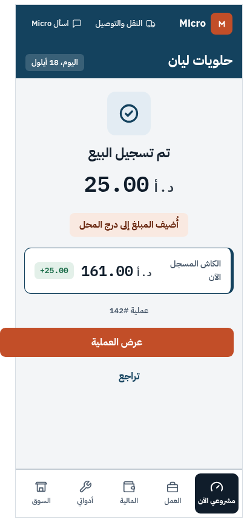
النجاح — وجهة بطعم دافئ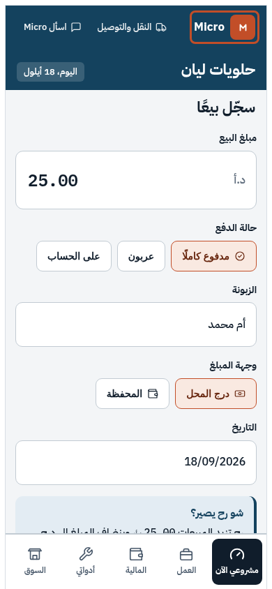
تركيز مرئي — حلقة من لوحة المفاتيحالاتجاهات الثلاثة محفوظة كاملة بأدلتها؛ C2R طبقة تنقيح موثقة فوق قاعدة C2 — ليست دمجًا قبل العرض، بل تطويرًا للمرشح بعد التقييم.
مرّر مالك المستودع رمز وصول في المحادثة لتمكين الدفع. استُخدم لمرة واحدة عبر مساعد اعتماد محلي ولم يُطبع أو يُخزَّن في أي ملف أو تقرير. يوصى بإبطاله وتدويره فور استلام هذا التسليم.
النموذج الأولي التفاعلي، الرموز، البراهين، والتقارير الكاملة داخل مستودع التسليم. التوصية خبيرية، والاعتماد النهائي والتحقق من المستخدمين الحقيقيين ما زالا معلّقين بالكامل.